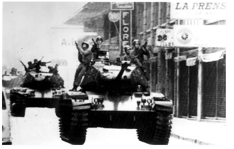
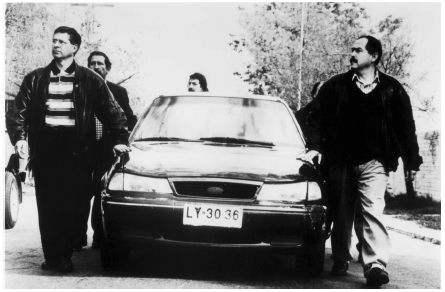

“历史不是自我完成书写的，”历史学家小阿瑟·施勒辛格说过，“不是你把一块硬币投进去，就有一段历史出来。”所有的历史都是为当下的人写的，为他们呈现一种东西，历史学家把这种东西叫做“可利用的过去”——这个关于过去的故事可以帮助我们建立对自己的理解。历史也总是在它之前的历史的基础上写成的——有的时候是对之前的否定，有的时候是加强，有的时候则是提出原来历史中没有写过的东西。
用电影讲述历史的纪录片人，会面临他们的电影同行们面临的所有挑战。他们也和历史学家一样面临着获得资料的问题。他们常常要再现某些没有影像资料的历史事件，也常常会利用一些从未被当作历史记录的材料来再现事件。他们会用一些手段来代替历史影像，如照片、画、代表性的物体、重要文件的图像、搬演，还有众所周知的手段：镜头前的专家。他们运用唤起某个时代感觉的音乐，让歌手来演唱那个时代的歌，制造一些音效来刺激观众的感觉，让观众觉得眼前看到的是某个真实的历史时刻。他们苦恼的问题在于，多大程度的搬演是适合的，以及怎样实现搬演。
这些纪录片人同样面临着专业知识的问题。通常，看纪录片的人要比看历史学家著作的人多得多，但纪录片制作人很少有历史学家那样的学术背景。事实上，纪录片制作人常常避免请一系列的专家来当顾问。在纪录片制作人眼中，历史学家常常对很多事情吹毛求疵，如历史事件的准确时间顺序、事件的多种解释、加入小人物的必要性，以及准确的细节等等，所有这些都影响影片故事叙述的清晰性，不利于吸引更多观众。公共电视台常常要为纪录片制作配备专业知识指导委员会，而商业电视台对它们出品的纪录片则很少有这样的要求。
最后，著书立说的历史学家们可以批驳、评论或解释事件，而纪录片人则不同；他们从事的工作是用画面和声音模仿现实，其本身就隐含了对某个单一真相的肯定。这就让他们更难以在影片中引入对事件的其他解释，甚至不能让人感觉到他们实际上是在分析事件。
纪录片制作人常常选择不去考虑他们选择背后的意义：他们可以认为自己仅仅展现了历史事实，或者不带批判地持有带有偏见的观点。但是，他们的作品却是让人们理解过去的第一扇门。
故事
所有的历史纪录片都是关于“可利用的过去”的故事，这一点可以以下几部影片为例来加以解释。
俄国革命成功后不久，叶斯菲里·舒布制作了一部历史纪录片《罗曼诺夫王朝的覆灭》（1927）来批判沙皇的统治；该片运用的影像脚本全部来自沙皇的影像资料，包括沙皇的家庭电影。舒布开创的这种电影，后来被叫做“汇编纪录片”。事实上，沙皇的家庭成员要是看到自己奢华的生活场景和人民贫苦悲惨的生活场景交织在一起，非得大吃一惊不可。
舒布通过对材料做选择性的整合和并置，改变了原来影像的意义，将一个养尊处优的家庭的温情录像，变成了对被推翻政府的强烈谴责。
第二次世界大战期间，各国政府都对宣传纪录片大笔投资，政府录像迅速发展；冷战期间，双方阵营都利用了这些资料拍摄历史纪录片，这再一次体现了历史的“可利用性”。故事的讲述方式是适应观众——共产主义或资本主义国家的观众——和适应时代的。在新生的东德，安德鲁·桑代克（出生并成长于德国的德裔美国人）和安内利·桑代克夫妇利用档案影像制作了很多纪录片，包括歌颂和全面展现苏联历史的《苏联的奇迹》（1963）。在美国，从海军公关部门退役的亨利·“皮特”·萨洛蒙来到美国全国广播公司工作，他与海军有关部门合作，利用档案影像制作了《海上雄风》，这是一部播放周期很长的26集系列纪录片，歌颂了第二次世界大战期间美国海军在太平洋地区扮演的重要角色。理查德·罗杰斯作曲的音乐唤起了观众对影片的情感回应；片名《海上雄风》也很恰如其分；影片准确地表现了美国及其盟国无私地为自由而战的行为和勇敢无畏的精神，当然还有最终的胜利。不论是东德还是美国的制作人，都力求诚实地讲述有意义的、情感丰富的故事。他们的作品也很恰当地完成了政府和时代所赋予的意识形态任务。后来随着时间流逝，那个时代的意识形态设定渐渐淡化，从前的一些社会思潮又浮现于人们的视野，这些纪录片就显得宣传性太强了。
肯·伯恩斯的《南北战争》（1990）也是一部精雕细琢的叙事片，而并不仅仅是对历史事实的叙述。该片是在美国公共电视上播出的最受欢迎的剧集之一。它告诉观众，南北战争有史以来第一次创造了一个统一的美国民族身份。为了证实这一论点，影片采用思考的、移动的镜头来展现静止的图片资料，并让专家发表他们的看法。
利用图片的好处有很多，其中之一就是可以让观众感觉他们只是在观看事实的陈述。
一些南方人可能会认为《南北战争》的中心主题不合理，但正如加里·埃杰顿在《肯·伯恩斯影片中的美国》一书中所提到的，当时“统一史学” [18] 的核心——“自由的多元论观点”强调对于联邦的维护。伯恩斯遭受了不少批评，有的历史学家认为对这段历史应有不同解释，有的历史学家认为该剧集的真正罪过在于它隐瞒了一个事实，即它是在阐释历史而不是在真实地记录历史。伯恩斯没有去正面回应这些批评，他声称自己不是一个历史学家而只是一个“情绪丰富的人类学家”。他说他从历史记录里寻找“一种情感和共鸣，这样的情感和共鸣能够提醒我们很多事情，比如为何我们能排除各种不利因素达成共识，成为一个统一的民族”。换句话说，他有选择性地讲述关于过去的故事，并在此基础上选择人物和事件来帮他完成故事的讲述。
商业方面的考量也会对纪录片人如何决定影片的题材和情节有所影响。电视纪录片以娱乐为目的，常常展现生活中较为轻松的一面，包括娱乐业本身。戴维·沃尔珀的《好莱坞：黄金时代》（1961）和法国系列剧《疯狂的20年代》这两部通俗作品是电视剧时代纪录片的典型代表。在多频道电视的时代，历史纪录片成本低，播放时间长，不需要提供深度或平衡的观点，也不需要展现某个历史时期最重要的方面。这些纪录片将不受版权保护的政府资料和低成本的档案资料拼凑成画面（常常结合煞有介事的解说），以至于形容这一行有了一个专门的词：“剪报工作”。
资料的难以获取也会限制历史纪录片制作人的选择。由于许多资料的版权年限被延长至未来很多年，大量运用受版权保护影像资料的纪录片成本变得越来越高昂。经过权威研究的历史纪录片本来就一直是纪录片中较为昂贵的。20世纪末，档案库纷纷合并，大的传媒公司在数字化生产的威胁下，对自己的资源控制得越来越紧，在这种情形下版权结算费用更是一路飙升。在《未讲述的故事》一书中，彼得·贾西向笔者指出，一些纪录片人甚至连开展大项目都不愿意。针对这一问题，美国的纪录片人推出了《纪录片制作人合理运用资源最佳方案的宣言》，这份指导意见极大地提升了纪录片制作人的制作能力，使他们可以运用自己的权利免费引用有限数量的版权材料，扩大纪录片制作的范围。
人物传记片
人物传记片——一种特殊的历史纪录片——醒目地展现了一种方法选择，证明了所有的历史作品都是一种阐释。人物传记片是一种极受欢迎的纪录片形式；它将镜头近距离对准某一个特定的人物，向观众许诺，他们将会了解到一个被公认为重要的人物（政治家、名人、艺术家、体育冠军等）、一个他们从前不知道的重要人物（如不知名的发明家、默默无闻的社会工作者、自学成才的艺术家），或是历史事件的一个见证人（如大屠杀的幸存者、希特勒的秘书）。从人物传记片的定义来看，这一类的影片是以人物为中心的，但纪录片制作人必须担负起为观众阐释这一人物的任务。
电视上曾经播出过一些系列传记电视剧。美国公共电视网的《美国大师》系列和A&E电视台 [19] 的传记频道就是其中两例。它们的风格特征鲜明，而且彼此区别很大。《美国大师》描述了某一个特定的社会时刻美国的生活；个人的故事被放在一个社会环境中，片中注重表现这个社会环境中的事件和潮流，它们影响着个人的行动和抉择，同时又是个人行动和抉择的结果。影片不仅仅描述个人生活中的事件，更强调这些事件在更大范围内的意义。比如，迪亚娜·冯·弗斯滕伯格和丹尼尔·沃尔夫的《安迪·沃霍尔》是关于美国艺术家安迪·沃霍尔的纪录片，沃霍尔以放诞轻浮的艺术噱头和派对而闻名，影片将其作为一位对美国文化怀有高度热情的严肃艺术家而加以肯定。影片用不卑不亢的语调向观众宣布：看了这部电影之后，现在他们可以理解安迪·沃霍尔的重要性和留下的财富了。
A&E电视台的人物传记片则完全不同，是严格以人物个性为线索的纪录片，人物类型有两种：好人（常是娱乐名人）和坏人（常是罪犯）。学者米基塔·布罗特曼指出，这些传记故事常常经过删节，以将名人再现为讨人喜欢而正直的公民，而与之矛盾的证据则被有意淡化。比如，在以弗兰克·辛纳特拉为中心的“鼠党”名人系列纪录片中，有一部关于迪安·马丁的人物传记片，该片将马丁再现为一个忠于家庭的人，虽然大量证据表明他风流成性、生活放荡。
虽然这些纪录片有很大不同，但是它们都运用了一些电影技巧，目的是为了让观众对人物形成某种理解。影片会引用权威人士的话来渲染故事情节，也会有选择地采用历史影像来强调某个观点，影片的结尾会总结性地表现主题，让观众理解这个名人生活的意义、重要性以及对自己的启示。与此相反，另外一些人物传记片则用一些电影技巧让观众注意到传记片的建构性，挑战观众的一些想当然的观点。比如柯比·迪克和艾米·齐林·科夫曼的《德里达》（2002）就是一次对传记纪录片固定形式的挑战；影片很聪明地表现了真实生活和纪录片拍摄之间的区别，展示了故事讲述者制造事实的能力——手段之一是向观众展示编故事的难度。影片主人公雅克·德里达一生的工作就是“解构”我们关于知识的假设，他不断地拒绝与影片制作者合作，要向观众揭露出他们的存在。这些揭露的行动本身也展示了这位哲学家的性格与观点。这部影片激发观众思考德里达提出的现实与表现的问题。埃罗尔·莫里斯的作品则运用了另外一种方法，指出人物的生平事实和纪录片之间的关系不那么简单。比如在《战争迷雾》（2003）中，莫里斯任由肯尼迪和约翰逊任总统期间的国防部长罗伯特·麦克纳马拉对着镜头长篇大论地讲述自己的人生，以及颇有争议的政治和个人决策而没有给予评论。麦克纳马拉人生中的复杂与矛盾被展现在观众眼前，观众必须自己仔细斟酌，从而对麦克纳马拉形成评判。
修正主义
要想知道纪录片故事讲述的力量，最有意思的方式之一是观看修正主义的历史电影。这些电影挑战了占主导地位的历史记录版本。一些纪录片对于已经形成共识的第二次世界大战历史提出了疑问，从而大大地影响了公众对于这段历史的认知，而且在影响公众认知的过程中，也为历史学家们提供了新的一手资料。有时候，它们就是独一无二的、由当事人亲口讲述的历史。
英国系列纪录片《第二次世界大战全史》（1973）由杰里米·艾萨克斯为商业电视台泰晤士电视台制作（当时英国商业电视台被要求承担大量的公益宣传），该片标志着对第二次世界大战阐释的历史性转折。该片共有26个小时，结合了历史影像与对亲历者的采访，在英国至今仍很受欢迎，也在世界各地播放，包括美国的历史频道。在很多方面，《第二次世界大战全史》都是修正主义的。它并未采取某一个民族或地域的立场，而是采取了全球的立场来看待战争，而且极其重视亲历者的经历。一批执着的历史研究者——其中一些人是研究历史的学者——找到了极有说服力的采访对象，他们都符合艾萨克斯的标准，即能够表现战争怎样“确确实实地对普通人的生活产生了影响”。
影片的核心信息是战争就是地狱，而不是我们取得了胜利。片中令人震惊的残酷暴行与死亡的图片更强化了这一信息。该片在当时引起了强烈反响，这与当时的时代特点有关：超级大国不仅引起了核战争恐慌，还触发了代理人战争 [20] 。
差不多同时，法国纪录片人马赛尔·欧菲斯也改写了世界对于法国第二次世界大战经历的看法。欧菲斯采取的方法是调查报告，如在纪录片《悲哀和怜悯》（1969）中他就用这一方法展示了法国对纳粹统治的合作。他将法国与法西斯无条件的合作发掘出了新的深度。这部四个半小时的影片颇受争议；影片中大部分的内容都是在小镇克莱蒙费朗对各种当事人的采访，采访揭示出一个问题：法国英勇抵抗的形象只是中产阶层中流传的神话，真正领导抵抗的是穷苦的劳工阶级。（评论界后来批评制作人选择了一个共产党员人数极少的地方拍摄，而共产党一直是抵抗的主要组织者。）该片由法国国家电视台和西德以及瑞士政府电视台联合制作，也在德国和瑞士播放，但法国总理下令禁止其在法国电视台播放。直到该片在美国巡回展映大获成功后，才在法国的影院和英国广播公司的频道中播出。
法国犹太人克洛德·兰兹曼制作了一部近十个小时的系列纪录片《浩劫》（1985），该片也体现了这样一种坚决要求重新审视第二次世界大战历史的风格。整部片子都以采访的形式拍摄，包括对犹太人大屠杀中的幸存者和执行人员（通常都是技术人员和公职人员）的采访。兰兹曼用这样的方法，不是为了探寻大屠杀发生的原因，而是为了追踪大屠杀的确切情形（或者至少是人们记忆中的情形）。《浩劫》所展现的大屠杀整个执行机制的具体程度是公开录像中前所未有的。影片用逐步深入的展现方式，让很多观众震惊而动容，并引起了关于采访中伦理道德的讨论：对于不愿合作的采访对象来说，用隐蔽摄像机是否合理？将采访过程重演是否合适？应当告诉观众多少背景信息？
对于第二次世界大战的修正主义表现不仅仅为战争故事提供了不同的视角和信息，也为这些故事引入了新的元素。在日本，原一男的《前进，神军！》（1988）以真实电影的风格，用镜头追踪了一位偏执到发狂的老兵，他试图揭露新几内亚战役 [21] 过后，被弃于孤岛的日军部队中吃人的行为，潜台词是天皇应当对日本当局简单否认的战争罪行负责。这位老兵的故事既恐怖又独特，也代表了对战争罪行的普遍否认。在美国，女权主义纪录片制作人康妮·菲尔德的《后勤女工》（1980）讲述了一段不为人知的历史，即妇女在战争期间的工作改变了她们的生活；该片还记录了战后政府各部门联合起来，想让这些妇女放弃工作回归家庭的过程。菲尔德将女性和工人带回了曾经只有男性军人和政客的历史中。
在将新元素带入历史的纪录片当中，最令人瞩目的例子之一是亨利·汉普顿的《民权之路》（1987，1990）系列。这部突破性的系列纪录片在美国公共电视频道上播放，追踪了美国民权运动，基本观点是它保护了美国文化中最宝贵的价值，时常挑战当时的种族主义情形，其本身也不乏深刻的内在矛盾。制作团队中的每个小组由一位非裔美国人和一位白人制作人搭档构成，他们请来历史学家当顾问，从大大小小的影像档案库、私人收藏的录像、地方电视台的节目库中找到罕见的资料，创作他们的故事。有些画面和事件，可能过去只在某一个地方电视台播出过，并且只播出过一次，而这一系列的纪录片让全国的观众看到了这些画面和事件。它让全国的公众都意识到民权运动在美国历史上的深刻影响。该系列片成为美国学校的重要教材，也成为后来历史修正主义系列片的模板，如时长四个小时的系列片《墨裔美国人！》（1996）和《平等的问题》（1996），后者是关于男女同性恋维权运动的历史纪录片。
当然，无论是否出于有意，修正主义的纪录片自身可能会略去一些关键信息。比如，20世纪七八十年代的美国独立纪录片中，有回顾20世纪30年代的政治运动的，比如工会组织（《青年女子联盟》，1976）、罢工（《婴儿和旗帜》，1978）、西班牙内战（《正义之战》，1984）。这些婴儿潮世代的纪录片制作人一般不会展示共产党在这些事件中的全部角色，或者会接受共产党人的自述。这些纪录片制作人通过口述历史来挽救被封存的过去，将自己看成他们所景仰的政治激进人士的代言人，他们是很容易因为将口述历史作为唯一的信息来源而受到局限的。
记忆与历史
随着家庭电影和录像资料库的发展，以及更加简易的摄像设备的产生，回忆录电影或个人电影对历史纪录片作出了重大贡献。在这样的作品中，私密的、个人的叙述有时会和官方的、公开的记载形成对比。个人记忆常常和公开历史并列在一起，对公开历史形成挑战。新的故事不断产生，个人经历也丰富了公众对于过去的理解。
电影制作人用许多不同的技巧来再现记忆。其中一个常用的手法，用纪录片制作人戴维·麦克杜格尔的话说，是将“空缺的符号”的画面——损失的东西、遗弃的物品或一张有待解释的照片——置于影片的中心，并用记忆去解决这一中心问题。比如《战地余生》（2004）记录了一项将犹太儿童转移出纳粹德国的拯救行动，制作人找到了当时的犹太儿童真正随身携带的物品，并将它们作为象征，而不是仅仅用类似的物品来代替。很多时候，个人电影制作者也会用一些讽刺性的或反思性的方式展示熟悉的物体或形象，促使人们对其进行重新思考：不同元素的拼贴、空白画面、让人震惊或提出问题的文字，或者重复——这些手段都迫使观众反思或重新理解某个声音或形象的意义。
有些时候，纪录片制作人还会利用此前先锋派和实验派电影制作的手法。这一点在美国先锋派纪录片制作人伊冯娜·雷纳的作品中就有不少好的例子。非裔男同性恋电影制作人马龙·里格斯的《饶舌》（1989），采用了视觉诗歌的结构，其叙事轨迹就像寻找自我身份的一次旅行。罗斯·麦克尔威的作品——《谢尔曼远征》（1986）、《六点整新闻》（1996）、《闪亮的烟叶》（2003）——都记录了他（或者说，他的人格化身）对自我的感受不断变化的过程，这得益于他在实验派电影人那里学到的经验：用身体和自己的生活作为电影主题。
个人电影对于20世纪八九十年代全球文化身份运动的发展起到了推动作用。政治变革和经济全球化，制造了南亚人、东南亚人和非洲人离散运动的新高潮。具有自我意识的离散族裔文化开始逐步显现，并在各种机构的支持下，在电影中寻找表达。英国的社会环境也发生着变化：独立制作人发起抗议，各种骚乱过后少数族裔开始觉醒，新的私有（但是会有政府税收出资）电视台——英国第四台成立，在这些因素的综合作用下，诞生了专门支持少数族裔电影制作的工作室。
这些工作室中有一些成功的例子，如所谓的黑人电影工作室，包括著名的电影制作人艾萨克·朱利恩效力的“穿越时间”工作室和“黑色听觉集团”工作室。这些工作室的作品让人们对各个少数族裔的自我再现问题以及女性的角色问题展开了广泛而卓有成效的讨论。
约翰·阿科姆弗拉的《汉兹沃思的歌》（1986）是其中著名的作品之一。该片是一次完美的实验，用诗意的方式将骚乱、贫民窟、新闻片和殖民时代的历史影像等画面重新整合成一部关于历史和身份的个人散文电影。另外一部备受赞誉的影片是恩戈齐·翁伍拉的《健美选拔赛》（1990）。翁伍拉的父亲是尼日利亚人，母亲是英国人。该片将虚构元素与纪录片元素结合起来，让一位女演员来饰演翁伍拉，翁伍拉的母亲则由其本人出演。影片将母女二人的身体形象和个人经历进行对比，而这种对比又是由于英国社会日常生活中无处不在的种族、性别和年龄歧视造成的。
后殖民时代和后冷战时代的环境也催生了许多作品，这类作品将自传的热情与对历史的审视结合起来。制作人用个人散文电影的方式，来质疑非洲政府对于历史的遗忘。纪录片制作人戴维·阿奇卡尔的父亲曾是一名地位显赫的几内亚官员，后来失势，死于狱中。阿奇卡尔的《上帝的意志》（1991）将搬演、家信、家庭电影和新闻片图像等元素综合在一起，驳斥了官方对于他父亲消失方式的解释。该片既是一部回忆录，也是一部沉思录，对围绕革命领袖塞古·杜尔的谎言给予了回击，在几内亚和全世界范围内都引起了争议。海地制作人拉乌尔·佩克的家人曾在帕特里斯·卢蒙巴的刚果政府工作，佩克出品了纪录片《卢蒙巴：先知之死》（1992），后来又将其改编为同名电影。佩克在该纪录片中拼贴了多种视频来源：佩克的家庭电影、他自己的视频日记（记录了他寻找卢蒙巴的档案影像却徒劳无功的经历，因为这些影像都被杀害卢蒙巴并取而代之的蒙博托封禁了）、各种采访，还有新闻画面。喀麦隆制作人让——马里·特诺则制作了一系列犀利的个人电影，将殖民的历史与现实中的暴行联系起来，《非洲，我将榨干你》（1992）就是其中一部。


图10和图11 上图：帕特里西奥·古斯曼的叙事电影《智利之战》（1976）表现了阿连德政府的失败，该片在智利被封杀，直到他30年后回到智利才得以公映。下图：纪录片《智利，执着的记忆》（1997）记录了古斯曼回到智利的情形。帕特里西奥·古斯曼导演
拉丁美洲独裁时代的结束，也推动了以记忆与历史为主题的纪录片的发展。巴西制作人爱德华多·科蒂尼奥拍摄了《二十年后》（又名《死亡名簿上的人》，1984）。片中科蒂尼奥回到20年前他和他的团队曾匆匆埋藏一些影片胶卷的地方；这些胶卷由一个巴西“新电影革命”项目所拍摄，记录了一位农民土地改革领袖被杀害的故事。电影项目由于一场军事政变而突然停拍。科蒂尼奥后来一直追踪这位农民领袖的遗孀和八个孩子。结果，影片通过展示这个破碎家庭的故事，讲述了迷失的一代人的故事。1997年，智利导演帕特里西奥·古斯曼制作了《智利，执着的记忆》，该片记录了他回到智利，第一次向他的祖国人民播放《智利之战》的经历。此前该片在智利一直被禁。
个人电影也一直被作为一种工具，将难以想象或无法承受的公众记忆重新展示在人们面前。20世纪90年代涌现出大批的大屠杀回忆录和回忆电影：米拉·宾福德的《雪中的钻石》（1994）、伊兰·齐夫的《奴隶的探戈》（1994）、阿米尔·巴——列夫的《斗士》（2001）、奥伦·鲁达夫斯基和梅纳赫姆·多姆的《躲藏与寻找》（2004）等。大屠杀幸存者的后代，或者有时是大屠杀幸存者本人通过回到大屠杀地点、和其他幸存者相聚，甚至与故人冲突对抗，来寻求一个答案、一个结束、一个解决。匈牙利制作人彼得·福尔加奇的纪录片，也寻求以个人记忆的力量，让公众了解过去。他对业余作品和家庭电影进行加工，展现了对遭到遗忘和压抑的20世纪30年代东欧历史的思考。
最后，个人声音和家庭电影也被用于表达人们对流行文化的再思考。斯泰西·佩拉尔塔的《狗镇与滑板队男孩》（2001）是一部关于滑板历史的迷人而生动的纪录片。片子追踪了滑板文化演进的过程——从海滩城市圣塔莫妮卡的街巷中起步，发展为几十亿美元的大生意，这一行业的一些名人（包括佩拉尔塔自己）就成长于这些街巷。影片将家庭电影和人物回忆交织在一起，并将两者和有关竞技滑板的真实电影资料进行对比——这些真实电影诞生于快节奏和商业化的环境中。丹麦制作人安诺斯·霍格斯伯罗·厄斯特高的《丁丁和我》以敏锐的方式记录了比利时作家和艺术家赫格的心灵史，将对赫格20世纪70年代私下的音频采访配上当代视频影像的动画，将他的动漫书插图也制成了动画。经历了冷战岁月的赫格，从一个天主教极端保守主义者，到后来几乎成为一个新纪元运动 [22] 的拥护者，对他这一历程的理解也促使人们再次分析其热门动漫书籍。
个人纪录片的发展，激发学者们探索记忆与历史的关系。琳达·威廉斯认为这类电影会让观众认识到真相依据周围的环境而存在，是相对于谎言而存在，是从一堆真相中选择出来的。这样的纪录片超越了自反性（即提醒观众这是一部电影）而提出：一些重要的真相必须要被揭露出来，观众的偏见不应影响到真相的揭露，甚至让观众注意到自己的偏见会有利于真相的揭露。因此，这样的纪录片提供了另外一种方式，来解释纪录片如何能做到忠于现实。比尔·尼科尔斯说过，个人纪录片常常“表演”纪录片制作人的思维和联想，记录的是一种个人眼中的真实。迈克尔·雷诺也曾在文章中提到，个人纪录片常常采取一种自白的语调，这将观众积极地带入了影片的意义建构，强化了共鸣感。
对谁有用？在什么地方有用？
要制作一部历史纪录片，就得成为历史学家——纪录片人有时会为此感到恼火。但制作人对于纪录片使用者有着重大的责任。每一部纪录片都被观众和后来的纪录片制作人当作对历史的准确再现，不仅如此，纪录片中的历史知识也影响着使用者对自己当前角色的认识。乔恩·艾尔斯的《卡迪拉克沙漠》（1997）是关于美国水问题政治的纪录片；艾尔斯曾说过，虽然许多大坝看起来都大同小异，但他还是力求影片细节绝对准确，因为他知道以后的纪录片制作人不会像他一样找原始资料，只会引用他影片中的内容。
每一部历史纪录片都诞生于一个特定的意识形态框架中，最起码在给观众看之前，制作人应当了解这一意识形态。
如果所有的历史都是可利用的历史，那么一个特定的历史故事什么地方有用？对谁有用？为什么有用？这些对于制作人和观众来说，都是值得思考的问题。